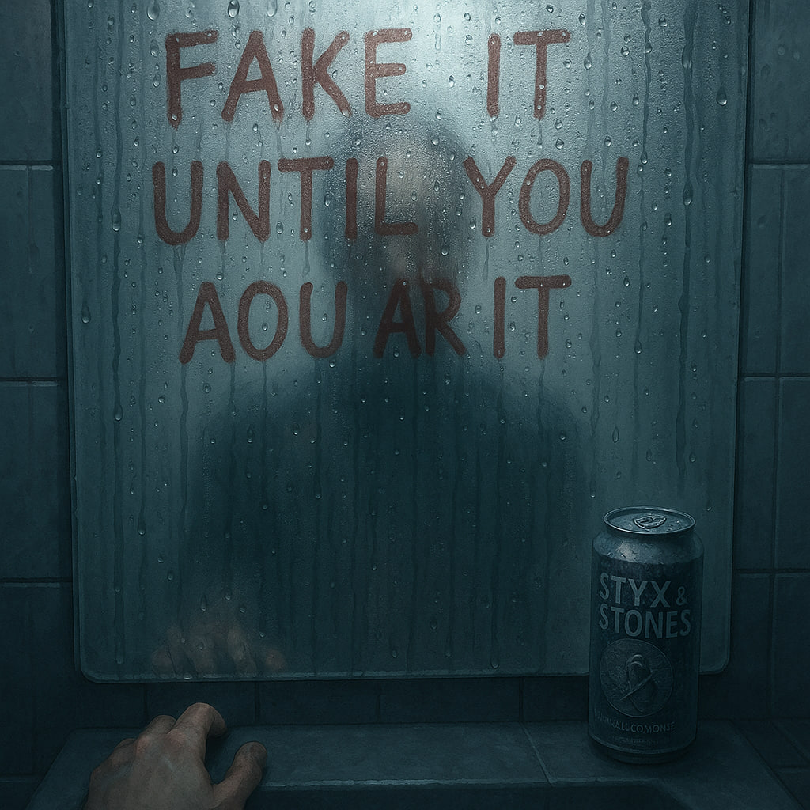
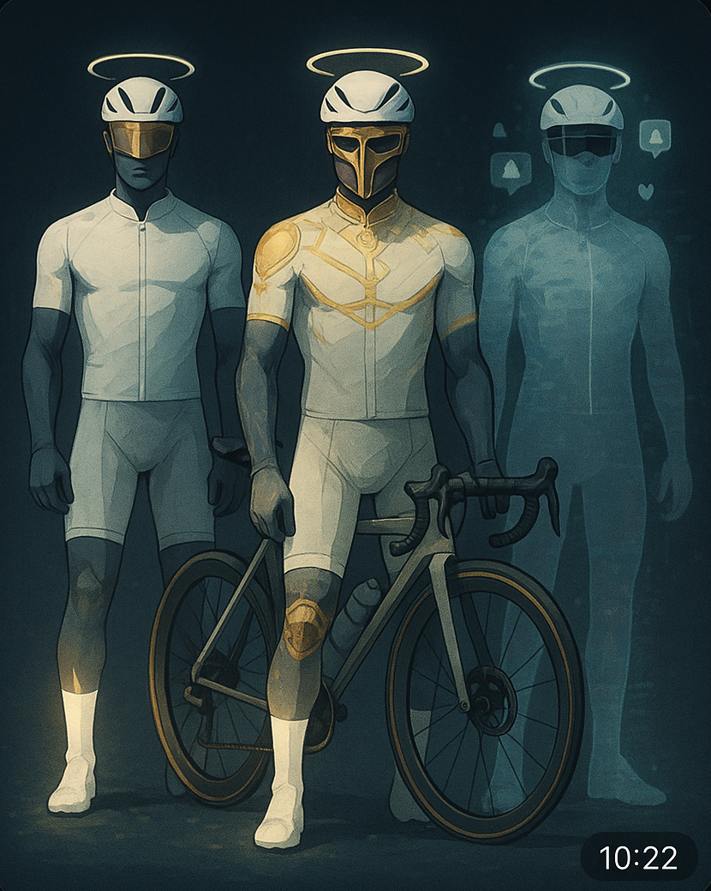
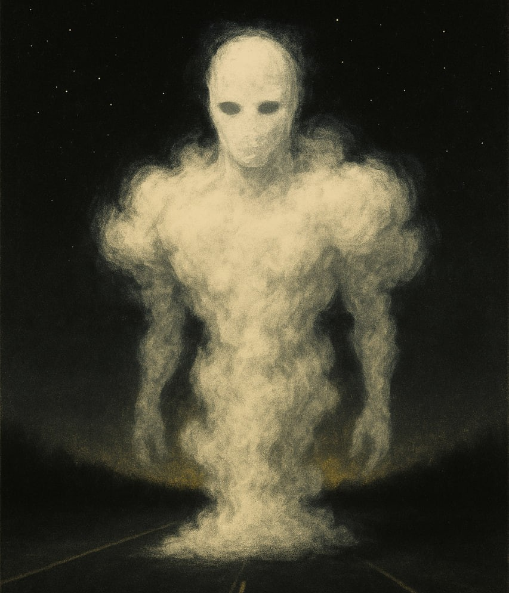
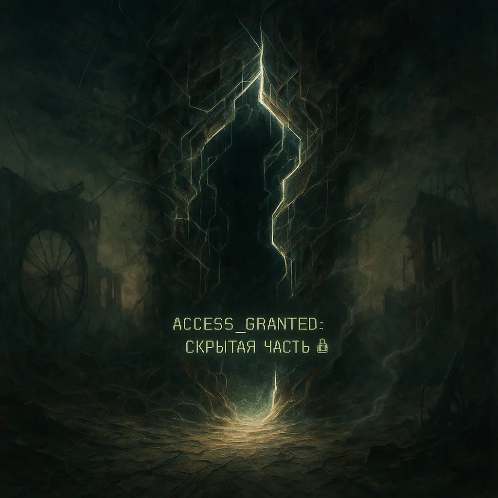
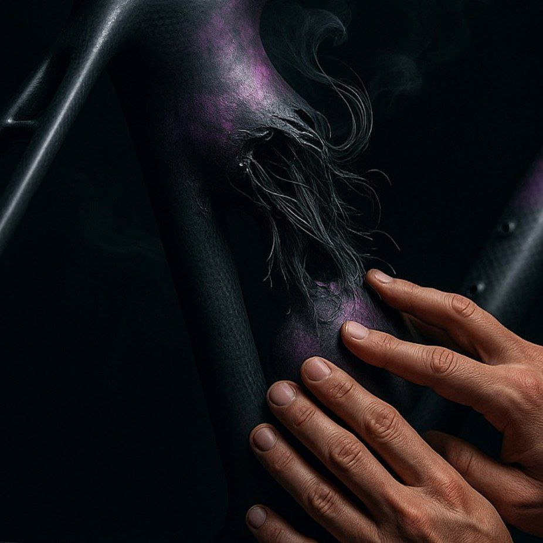
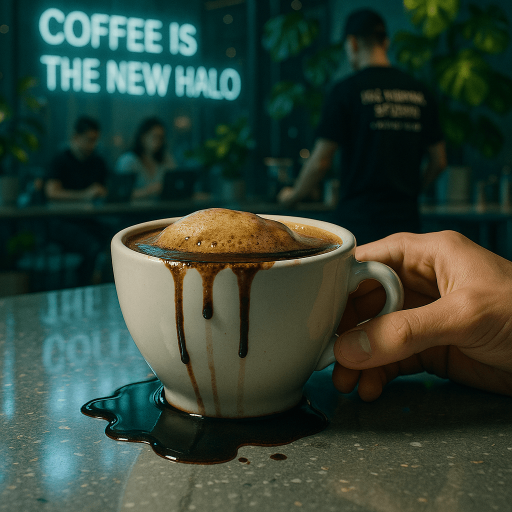
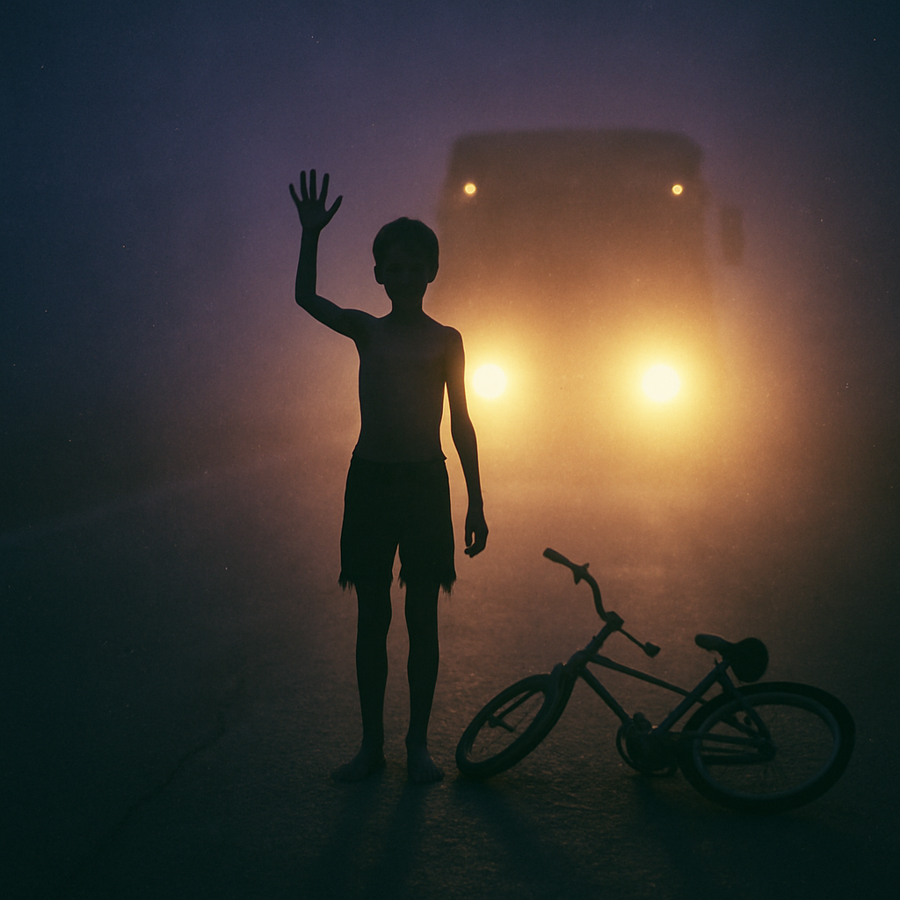
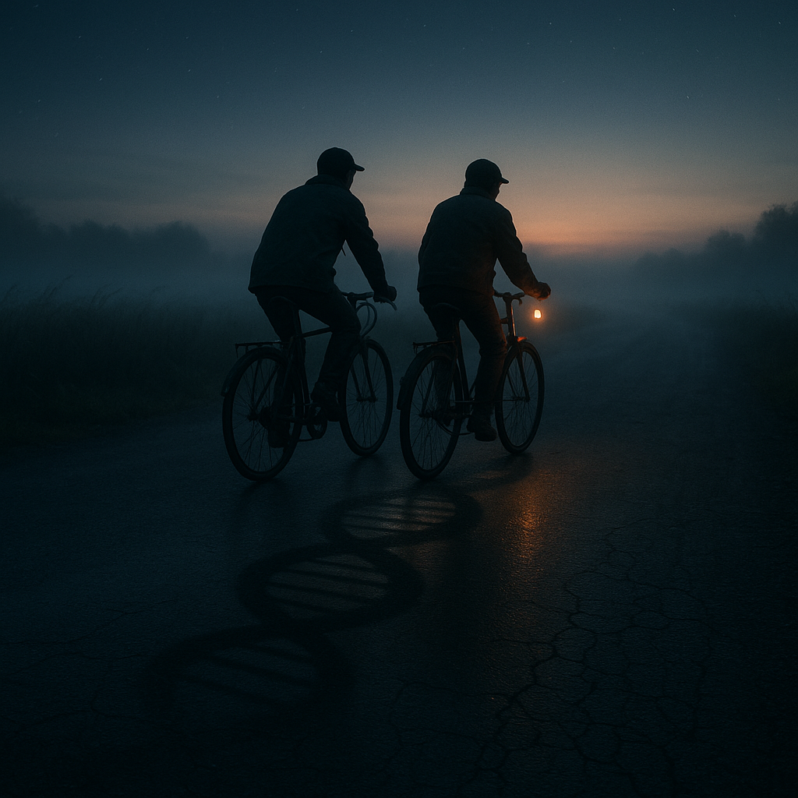

СВИТОК I: НИЧЕГО

[найдено в телефоне андрея]
"мама звонила 47 раз. я не ответил.
или ответил? я не помню."
// О ПРОЕКТЕ //
Офис → Телефон → Пустота → ?
Это не игра.
Это не терапия.
Это не ты.
Или ты?
[OMRA_LOG_20190315]
субъект_001: паттерн_повторяется
мать → экран → мать → экран
рекомендация: продолжить_наблюдение
// EVIDENCE_ARCHIVE //
СВИТОК II: ТРИО

СВИТОК III: НОЛЬ

СКРЫТАЯ ЧАСТЬ

СВИТОК IV: ТРЕЩИНА

СВИТОК V: КОФЕ

СВИТОК VI: ГРУЗОВИК

СВИТОК VI: ДНК

кажется, я уже здесь был